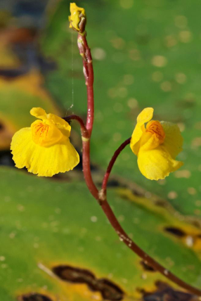
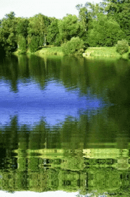

Pływacz to wieloletnia roślina wodna rosnąca w płytkich, żyznych wodach stojących i na torfowiskach. Pozbawiony korzeni, zanurza rozgałęzione pędy do 1 m długości, a w sprzyjających warunkach przytwierdza się do podłoża chwytnikami. Liście są drobne i silnie podzielone. Od czerwca do sierpnia nad wodę wznoszą się czerwonawe łodyżki z żółtymi kwiatami.
| Pływacz jest rośliną drapieżną - poluje na drobne owady, skorupiaki i plankton za pomocą pęcherzyków-pułapek. Dotknięcie wieczka powoduje gwałtowne otwarcie pęcherzyka i wciągnięcie ofiary podciśnieniem w zaledwie 1/160 sekundy. Wewnątrz ofiara jest trawiona enzymami. Pęcherzyki pełnią też drugą funkcję - dzięki zawartemu w nich powietrzu utrzymują roślinę blisko powierzchni. Polujące pływacze korzystnie wpływają na czystość wody. |
 |
| Pływacze źle znoszą falowanie - chwytniki nie są w stanie utrzymać ich na miejscu, a delikatne pędy łatwo się rwą. Dlatego chętnie rosną w osłoniętych miejscach: na skraju trzcin, wśród łanów grążeli żółtych itp |
 |